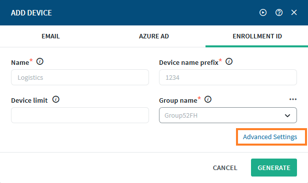
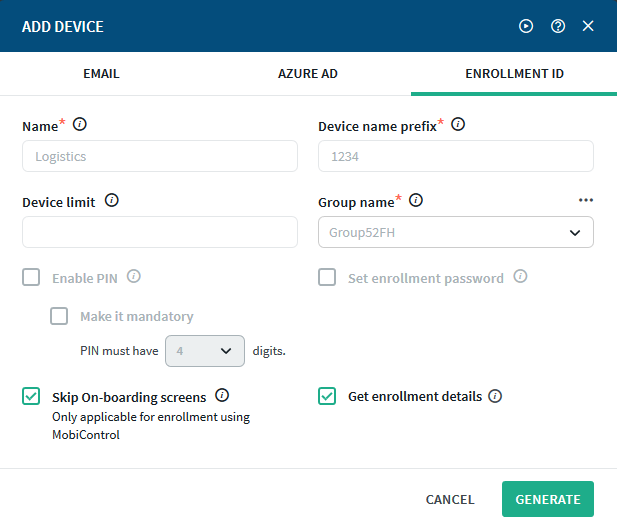
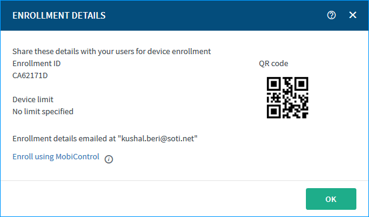
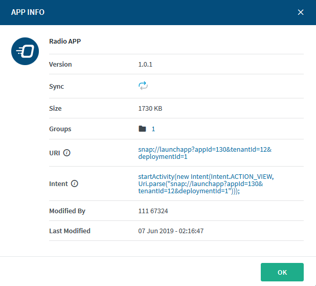

Lockdown is a feature in SOTI MobiControl that allows SOTI MobiControl administrators to limit device functionality to a strict set of apps and device features. You can add SOTI Snap as one of the approved apps. Learn more at Lockdown: SOTI MobiControl Help.
Lockdown is only supported on Android devices.
You must have the necessary permissions to perform the required tasks in the SOTI MobiControl instance where these devices are enrolled.
Note: The following features may work in unexpected ways or not at all when accessing SOTI Snap apps within Lockdown:
Multi-channel enrollment
Device notifications for the SOTI Snap app
App announcements
To send the SOTI Snap app to a device in lockdown:
Procedure
Build and publish an app. Begin the process of distributing it with an enrollment ID.
In the Add Device dialog box, fill in the fields and then click Advanced Settings to expand and display more options.

Under Advanced Settings, ensure that Skip On-boarding screens is selected and that neither Enable Pin nor Set enrollment password are selected.

Click Generate to generate the enrollment ID and QR code. They will appear in an Enrollment Details dialog box that also lists the device limit.

Click Enroll using SOTI MobiControl.
In the Enroll using SOTI MobiControl dialog box, select Android. From the More menu, select both Download (for the .ini configuration file specific to this app) and Download APK (for the SOTI Snap app).
Click OK to close the dialog box.
On the Apps view, click the app's name to open its App Info dialog box. Copy the URI and save it somewhere nearby.

Open SOTI MobiControl Package Studio and create a package containing both the .ini and .apk files. It should also have Android selected as the Platform. Enter the following as destinations for the files:
.apk goes to Internal Storage
.ini goes to %sdcard%
See Package Studio Help for information on creating packages and on Package Studio in general.
Create a profile for an Android Plus device and add a Lockdown profile configuration to it.
Important: There are two types of lockdown: device control or speed control. Device control applies lockdown settings continually while speed control applies lockdown when the device exceeds the speed specified in the profile configuration. You can choose to configure only device control or use both. However, when speed control is active, it overrides any settings specified in device control.
Click New to add a new home screen item.
Home screen items are the authorized apps that will be available when a device is in lockdown mode. Device Control home screen items and Speed Control home screen items are entirely separate from each other. If you're using both Device Control and Speed Control and you want to use the same home screen items for both, you must enter information for them in both places.
Enter a Display Name for the home screen item. The display name is the label that appears for the lockdown item on the device screen.
In the Package Name of Script File or URL field, paste the SOTI Snap app URI you copied in step 8.
Configure the rest of the options and add any additional menu items.
Add the SOTI Snap.pcg file to the profile.
Add an Authentication profile configuration to the profile.
The authentication profile configuration is required because it sets up admin mode on devices in lockdown, which allows admins to bypass lockdown mode on the device when necessary.
Save and assign the profile to your devices.
Results
The SOTI Snap app is now available as a Lockdown menu item on devices in lockdown.